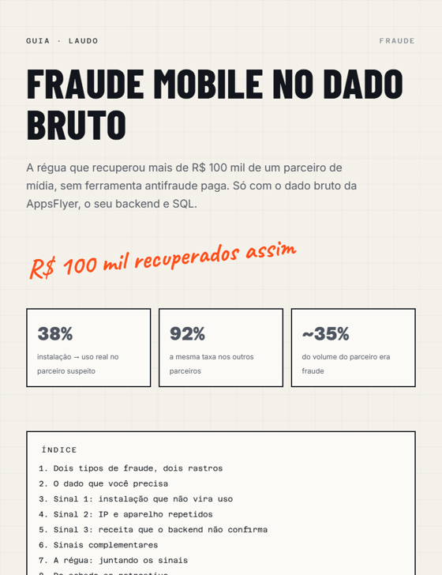

A régua que encontrou R$ 100 mil sem ferramenta paga. Os três sinais que eu cruzo para achar fraude num parceiro de mídia (instalação que não vira uso, IP e aparelho repetidos e receita que o backend não confirma), com as consultas SQL prontas para o dado bruto da AppsFlyer.

Quase toda fraude de mídia mobile cai em um de dois grupos. Separar os dois muda onde você procura.
| Tipo | Como funciona | O rastro que deixa |
|---|---|---|
Roubo de créditoclick flooding, click injection | O usuário é real e ia instalar de qualquer jeito. O fraudador dispara cliques para ficar com o crédito da instalação. | Usuário com comportamento normal, mas tempo entre clique e instalação estranho e muitos cliques para cada instalação. |
Usuário falsobots, device farm, emulador, SDK spoofing | O usuário não existe. A instalação e às vezes até os eventos dentro do app são simulados. | Instalação que não vira uso, IP e aparelho repetidos, nenhuma receita confirmada. |
O roubo de crédito desvia verba de um canal para outro. O usuário falso queima verba sem trazer nada. O segundo é o mais caro quando o parceiro é pago por CPA, porque a empresa paga por uma compra que nunca aconteceu.
| Fonte | O que usar |
|---|---|
| AppsFlyer, dado bruto de instalações (Data Locker ou Pull API) | install_time, attributed_touch_time, attributed_touch_type, media_source, af_prt, af_siteid, campaign, appsflyer_id, customer_user_id, advertising_id, ip, device_model, os_version, platform, country_code |
| AppsFlyer, eventos in-app | event_name, event_time, event_revenue, mais as mesmas chaves de usuário |
| AppsFlyer, relatório agregado por parceiro | Cliques e instalações por media_source e af_siteid |
| Seu backend (ou Firebase) | Primeira sessão real do usuário e pedidos pagos, com uma chave que ligue ao MMP |
appsflyer_id (pelo SDK) e o customer_user_id no seu backend desde a primeira abertura. Sem isso, os sinais 1 e 3 ficam pela metade.As consultas abaixo assumem as tabelas appsflyer.installs, appsflyer.inapp_events, app.sessoes e backend.pedidos no BigQuery. Ajuste nomes de tabela e coluna ao seu export.
Foi o sinal que abriu o caso dos R$ 100 mil. Em canal saudável, quase toda instalação vira uso real, e quase na hora. No parceiro suspeito, só 38% viravam. Nos outros parceiros, 92%.
O ponto fino: "uso real" tem que vir do seu sistema, não do SDK do MMP. Fraude por SDK spoofing consegue fabricar a instalação e até eventos dentro do app. O que ela não fabrica é uma sessão no seu backend.
-- Sinal 1: % de instalações com uso real em até 24h, por parceiro e site_id
WITH inst AS (
SELECT appsflyer_id, customer_user_id, media_source, af_siteid, install_time
FROM `projeto.appsflyer.installs`
WHERE DATE(install_time) BETWEEN DATE_SUB(CURRENT_DATE(), INTERVAL 32 DAY)
AND DATE_SUB(CURRENT_DATE(), INTERVAL 2 DAY)
),
uso AS ( -- primeira sessão registrada pelo SEU sistema
SELECT appsflyer_id, MIN(inicio_sessao) AS primeira_sessao
FROM `projeto.app.sessoes`
GROUP BY 1
)
SELECT
i.media_source,
i.af_siteid,
COUNT(*) AS instalacoes,
ROUND(100 * COUNTIF(u.primeira_sessao BETWEEN i.install_time
AND TIMESTAMP_ADD(i.install_time, INTERVAL 24 HOUR)) / COUNT(*), 1) AS pct_uso_real_24h
FROM inst i
LEFT JOIN uso u USING (appsflyer_id)
GROUP BY ALL
HAVING instalacoes >= 200
ORDER BY pct_uso_real_24h;Sem dado de sessão própria, use como aproximação o percentual de instalações com qualquer evento in-app em 24 horas. É mais fraco, porque o evento também pode ser fabricado, mas já separa os parceiros fora da curva.
Usuário real é disperso: muitos IPs, muitos modelos, versões de sistema variadas. Fazenda de aparelhos e emulador deixam concentração. No caso dos R$ 100 mil, apareceram instalações saindo dos mesmos blocos de IP e o mesmo device ID em "usuários" diferentes.
-- Sinal 2: concentração de IP, device ID e modelo por parceiro
SELECT
media_source,
af_siteid,
COUNT(*) AS instalacoes,
ROUND(COUNT(*) / COUNT(DISTINCT ip), 2) AS instalacoes_por_ip,
ROUND(COUNT(*) / NULLIF(COUNT(DISTINCT REGEXP_EXTRACT(ip, r'^(\d+\.\d+\.\d+)\.')), 0), 2) AS instalacoes_por_bloco_24,
ROUND(COUNT(*) / NULLIF(COUNT(DISTINCT advertising_id), 0), 2) AS instalacoes_por_device_id,
ROUND(100 * APPROX_TOP_COUNT(device_model, 1)[OFFSET(0)].count / COUNT(*), 1) AS pct_modelo_mais_comum,
ROUND(100 * APPROX_TOP_COUNT(os_version, 1)[OFFSET(0)].count / COUNT(*), 1) AS pct_versao_so_mais_comum
FROM `projeto.appsflyer.installs`
WHERE DATE(install_time) >= DATE_SUB(CURRENT_DATE(), INTERVAL 30 DAY)
GROUP BY ALL
HAVING instalacoes >= 200
ORDER BY instalacoes_por_bloco_24 DESC;Leia sempre contra a média dos outros parceiros, nunca em número absoluto. Rede de operadora e Wi-Fi corporativo concentram IP de forma legítima. O que denuncia é um parceiro muito acima dos outros, na mesma campanha e no mesmo período.
É o sinal que fecha a conta, e o que mais pesa na negociação. No caso dos R$ 100 mil, praticamente nenhuma instalação suspeita virou compra, mesmo com o parceiro sendo pago por CPA em cima da compra.
-- Sinal 3: compra e receita confirmadas no backend em 30 dias, por parceiro
WITH inst AS (
SELECT appsflyer_id, customer_user_id, media_source, af_siteid, install_time
FROM `projeto.appsflyer.installs`
WHERE DATE(install_time) BETWEEN DATE_SUB(CURRENT_DATE(), INTERVAL 60 DAY)
AND DATE_SUB(CURRENT_DATE(), INTERVAL 30 DAY)
)
SELECT
i.media_source,
i.af_siteid,
COUNT(DISTINCT i.appsflyer_id) AS instalacoes,
ROUND(100 * COUNT(DISTINCT IF(p.pedido_id IS NOT NULL, i.appsflyer_id, NULL))
/ COUNT(DISTINCT i.appsflyer_id), 2) AS pct_com_compra,
ROUND(SUM(p.valor) / COUNT(DISTINCT i.appsflyer_id), 2) AS receita_por_instalacao
FROM inst i
LEFT JOIN `projeto.backend.pedidos` p
ON p.customer_user_id = i.customer_user_id
AND p.status = 'pago'
AND p.criado_em BETWEEN i.install_time AND TIMESTAMP_ADD(i.install_time, INTERVAL 30 DAY)
GROUP BY ALL
HAVING instalacoes >= 200
ORDER BY pct_com_compra;Para parceiros pagos por CPA, compare também o que o MMP atribui com o que o backend confirma:
-- Compras que o parceiro cobra x compras que o backend confirma
SELECT
e.media_source,
COUNT(*) AS compras_atribuidas_mmp,
COUNTIF(p.pedido_id IS NOT NULL) AS compras_confirmadas_backend,
ROUND(100 * COUNTIF(p.pedido_id IS NOT NULL) / COUNT(*), 1) AS pct_confirmado
FROM `projeto.appsflyer.inapp_events` e
LEFT JOIN `projeto.backend.pedidos` p
ON p.customer_user_id = e.customer_user_id
AND p.status = 'pago'
AND p.criado_em BETWEEN TIMESTAMP_SUB(e.event_time, INTERVAL 1 HOUR) AND TIMESTAMP_ADD(e.event_time, INTERVAL 1 HOUR)
WHERE e.event_name = 'af_purchase'
AND DATE(e.event_time) >= DATE_SUB(CURRENT_DATE(), INTERVAL 30 DAY)
GROUP BY 1
ORDER BY pct_confirmado;Não entraram no caso dos R$ 100 mil, mas pegam o roubo de crédito, que os três sinais principais deixam passar.
Instalação poucos segundos depois do clique é rápida demais para alguém baixar um app: é o padrão de click injection. Uma cauda longa de horas e dias, com muitos cliques por instalação, é o padrão de click flooding.
SELECT
media_source,
af_siteid,
COUNT(*) AS instalacoes,
ROUND(100 * COUNTIF(TIMESTAMP_DIFF(install_time, attributed_touch_time, SECOND) < 10) / COUNT(*), 1) AS pct_menos_10s,
ROUND(100 * COUNTIF(TIMESTAMP_DIFF(install_time, attributed_touch_time, HOUR) >= 24) / COUNT(*), 1) AS pct_mais_24h,
APPROX_QUANTILES(TIMESTAMP_DIFF(install_time, attributed_touch_time, SECOND), 100)[OFFSET(50)] AS mediana_segundos
FROM `projeto.appsflyer.installs`
WHERE attributed_touch_type = 'click'
AND DATE(install_time) >= DATE_SUB(CURRENT_DATE(), INTERVAL 30 DAY)
GROUP BY ALL
HAVING instalacoes >= 200
ORDER BY pct_mais_24h DESC;No relatório agregado por parceiro, divida cliques por instalações. Milhares de cliques para cada instalação é sinal de flooding, ainda mais se a taxa de conversão do clique for muito menor que a dos outros parceiros.
Picos de instalação de madrugada sem pico de uso, e país do IP diferente do idioma do aparelho em volume alto, completam o quadro.
Cada sinal vira uma razão contra a mediana dos parceiros. Um parceiro é marcado quando dois ou mais sinais estão fora da curva no mesmo período.
| Sinal | Métrica | Ponto de partida para "fora da curva" |
|---|---|---|
| 1. Uso real | % de instalações com sessão própria em 24h | Abaixo de 60% da mediana dos parceiros |
| 2. Concentração | Instalações por bloco de IP ou por device ID | Acima de 2x a mediana |
| 3. Receita | % de instalações com compra confirmada | Abaixo de 30% da mediana |
| Extra | % de instalações com mais de 24h desde o clique | Acima de 2x a mediana |
-- Régua: cada sinal como razão contra a mediana, e quantos estão fora da curva
WITH s AS (
SELECT media_source, af_siteid, pct_uso_real_24h, instalacoes_por_bloco_24, pct_com_compra
FROM `projeto.auditoria.sinais_parceiro` -- junte aqui o resultado dos sinais 1, 2 e 3
),
r AS (
SELECT *,
pct_uso_real_24h / PERCENTILE_CONT(pct_uso_real_24h, 0.5) OVER () AS r_uso,
instalacoes_por_bloco_24 / PERCENTILE_CONT(instalacoes_por_bloco_24, 0.5) OVER () AS r_ip,
pct_com_compra / NULLIF(PERCENTILE_CONT(pct_com_compra, 0.5) OVER (), 0) AS r_receita
FROM s
)
SELECT *,
IF(r_uso < 0.6, 1, 0) + IF(r_ip > 2, 1, 0) + IF(r_receita < 0.3, 1, 0) AS sinais_fora
FROM r
ORDER BY sinais_fora DESC, r_receita;Agende essa consulta para rodar todo mês e mande o resultado para um painel ou alerta. Foi assim que a auditoria do caso virou rotina: uma consulta mensal que avisa quando um parceiro foge do padrão.
Fraude se resolve em negociação, e negociação se ganha com dossiê. O que levar ao parceiro:
No caso dos R$ 100 mil, o desfecho teve três partes: o parceiro foi bloqueado, os valores futuros foram renegociados e a empresa recebeu retroativo do histórico de cobrança. O retroativo só foi possível porque o pagamento era por uma ação de compra que, comprovadamente, não tinha acontecido.
Quando vale pagar a ferramenta: quando a verba em parceiros de risco multiplicada pela taxa de fraude que você encontrou passa do custo mensal dela. No caso deste guia, a cotação do Protect360 passava de US$ 5 mil por mês e a verba não justificava. Com o volume crescendo, a conta muda.
Quer guardar para consultar depois? O guia completo em PDF, com todas as consultas.
Baixar o PDF ↓30 minutos, de graça. Entro nas suas plataformas e mostro se algum parceiro está fora da curva.
Quero meu diagnóstico grátis →